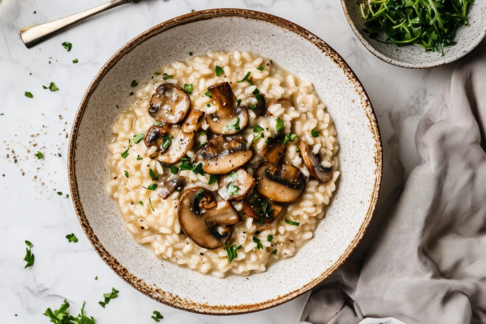

Składniki na 1 porcję
- 100 g ryżu arborio
- 50 g grzybów (np. pieczarki lub borowiki)
- 200 ml bulionu warzywnego
- 1 mała cebula
- 30 g parmezanu
- 1 łyżka masła
- Szczypta soli i pieprzu
Przygotowanie
- Pokrój cebulę w drobną kostkę, grzyby na plasterki.
- Na patelni rozpuść masło, podsmaż cebulę i grzyby do miękkości.
- Dodaj ryż i smaż przez 2–3 minuty, aż stanie się szklisty.
- Stopniowo dodawaj bulion, po jednej chochli, mieszając, aż ryż wchłonie płyn. Powtarzaj, aż ryż będzie miękki.
- Dodaj starty parmezan, wymieszaj. Dopraw solą i pieprzem do smaku.
- Podawaj gorące, udekorowane świeżymi ziołami.